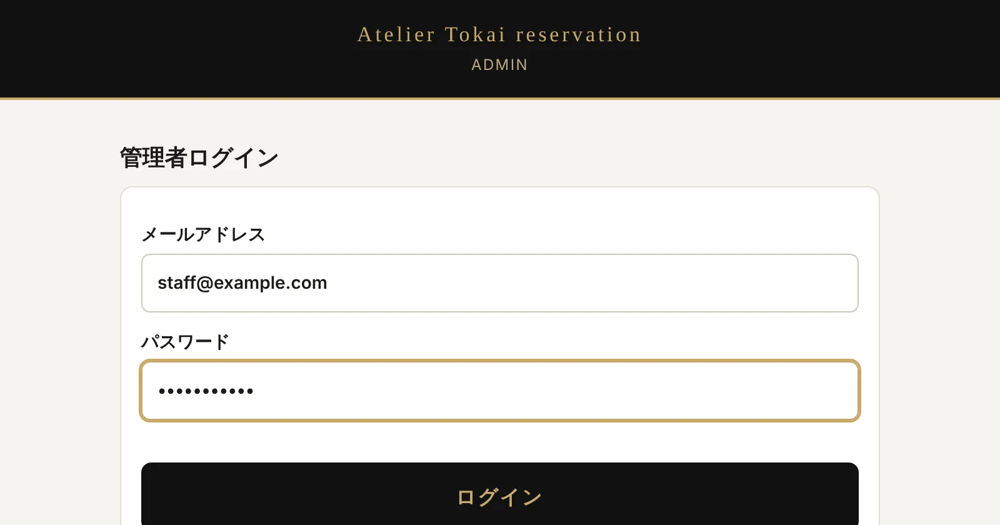
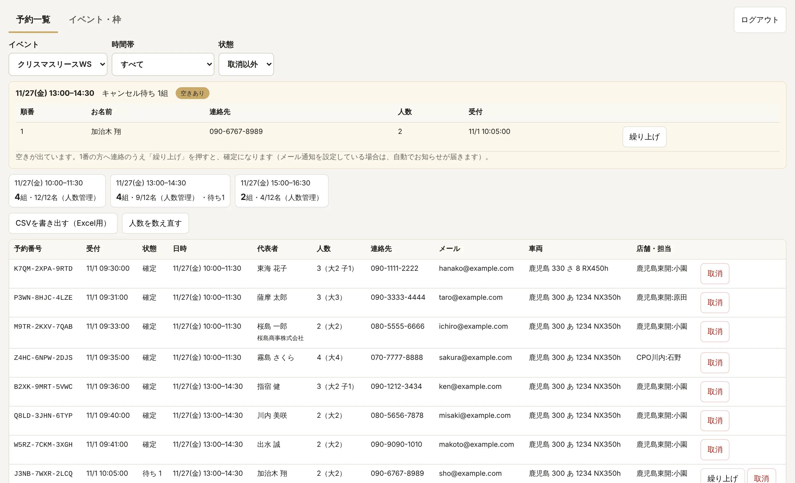
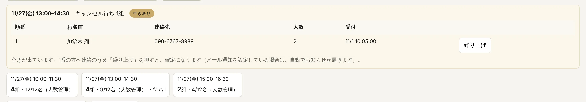
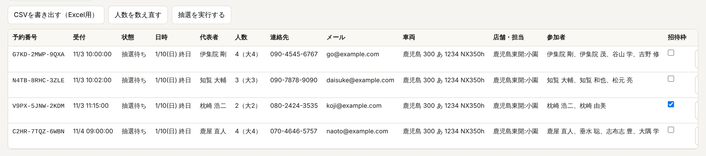
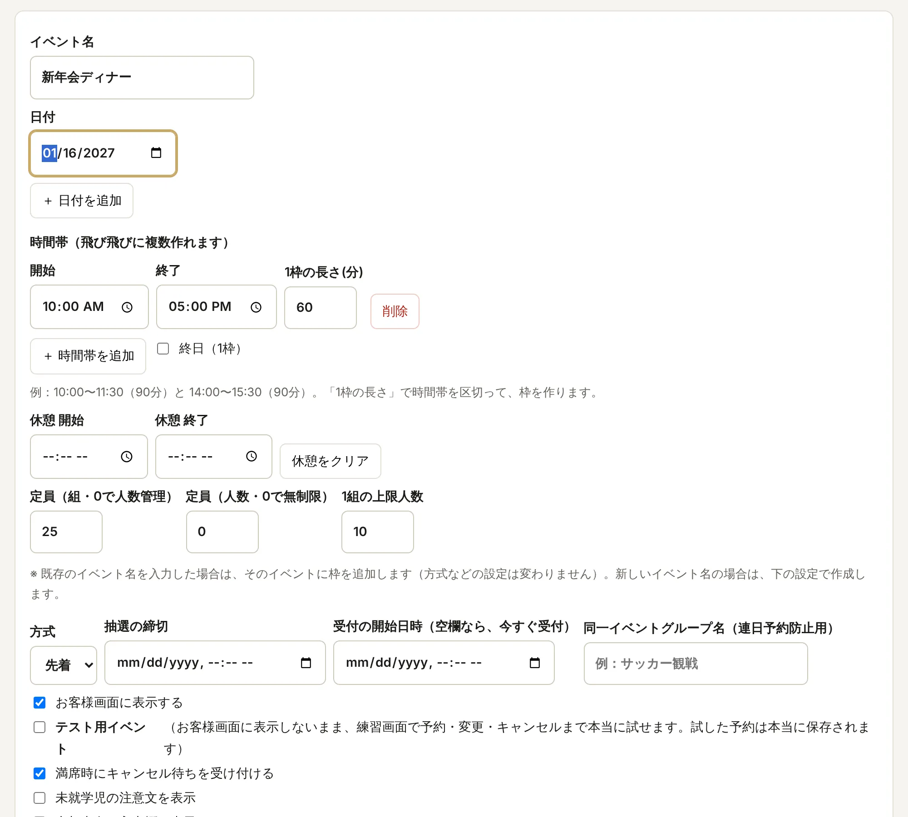
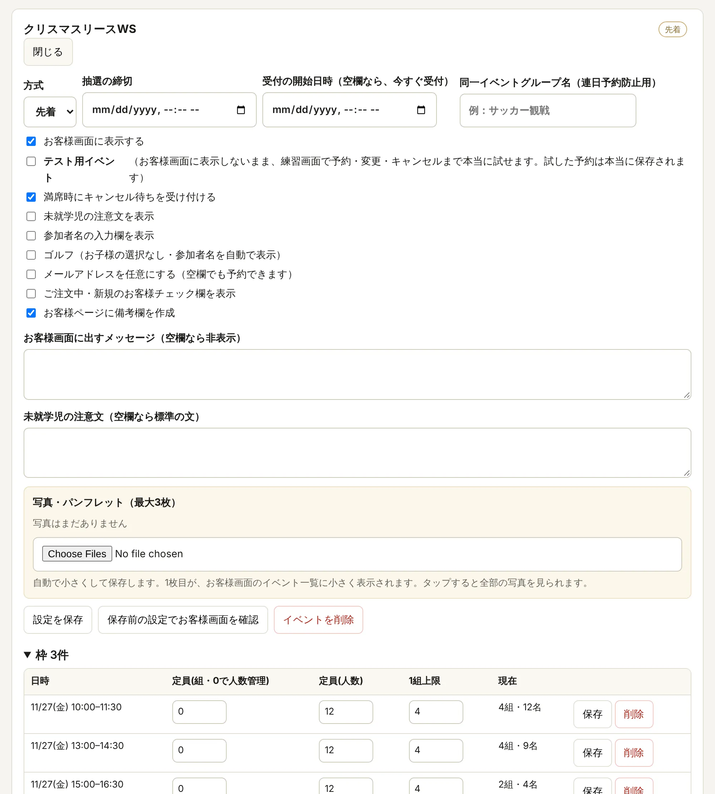

STEP 1
ログインする
管理画面（予約ページのアドレスの最後を admin.html にしたページ）を開き、ログインします。

①②③- ①管理者として登録されたメールアドレスを入力します。
- ②パスワードを入力します。
- ③「ログイン」を押します。
ご注意
登録された管理者アカウントだけが使えます。共有のパソコンでは、使い終わったら右上の「ログアウト」を押してください。
STEP 2
予約一覧を見る
ログインすると「予約一覧」が開きます。予約はリアルタイムで更新されます。

①②③④⑤⑥- ①「予約一覧」と「イベント・枠」を切り替えます。
- ②イベント・時間帯・状態で絞り込みます。状態は「取消以外」が標準です。
- ③時間帯ごとの予約状況です。「4組・9/12名」は、予約4組・9名（定員12名）という意味です。キャンセル待ちがあると「待ち1」のように出ます。
- ④「CSVを書き出す」でExcel用の一覧を保存できます。「人数を数え直す」は、枠の数字が合わないときに予約から数え直します。
- ⑤予約1件ごとの内容です。予約番号・お名前・連絡先・車両・店舗と担当が並びます。
- ⑥「取消」で、お客様に代わってキャンセルします。確定の予約を取り消すと、その枠に空きができます。
STEP 3
キャンセル待ちを繰り上げる
キャンセル待ちがある時間帯は、予約一覧の上にまとめて表示されます。

①②- ①「空きあり」は、1番の方が入れる空きが出ている印です。
- ②1番の方に店舗から連絡し、了承をいただいたら「繰り上げ」を押します。予約が確定になります。
ご注意
繰り上げは1番の方から順番に行います。今はお客様に自動では連絡が届かないので、必ず店舗からご連絡してください。
STEP 4
抽選を行う
抽選のイベントは、締切が過ぎたら管理画面で抽選を実行します。

①②- ①「招待枠」にチェックを入れた申し込みは、抽選より先に当選になります（定員の範囲内）。チェックは抽選待ちの間だけ変えられます。
- ②「抽選を実行する」を押すと、当選・キャンセル待ち・落選が決まります。お客様は「予約の確認」で結果を見られます。
ご注意
抽選は一度実行すると取り消せず、そのあとは新しい申し込みができなくなります。必ず締切を過ぎてから実行してください。
STEP 5
イベントと枠を作る
「イベント・枠」タブの「枠を作成する」で作ります。入力したら、いちばん下の「枠を作成」を押します。

①②③④⑤⑥- ①イベント名です。作成済みのイベント名を入れると、そのイベントに枠を追加します。
- ②日付です。「＋ 日付を追加」で、複数の日にまとめて作れます。
- ③時間帯と1枠の長さです。例：10:00〜17:00を60分ごと。「終日（1枠）」も選べます。休憩の時間は枠から除かれます。
- ④定員です。組数で決めるか、組を「0」にして人数で決めます（例：12名）。1組の上限人数も決めます。
- ⑤方式（先着・抽選）と、受付の開始日時を決めます。抽選のときは締切も入れます。
- ⑥「テスト用イベント」にチェックを入れると、お客様には表示されず、練習画面で予約まで試せます。
STEP 6
イベントの設定を変える
作成済みのイベントの「設定・枠を開く」から変更します。

①②③④⑤- ①受付の開始日時です。空欄なら、すぐに受付が始まります。
- ②テスト用イベントにするかどうかです。そのすぐ上の「お客様画面に表示する」で、表示・非表示も切り替えられます。
- ③「設定を保存」で、お客様画面に反映されます。
- ④「保存前の設定でお客様画面を確認」で、保存する前の設定のまま、お客様画面を開いて試せます。お客様には見えず、予約も保存されません。
- ⑤枠ごとに定員を変えられます。変えたら、その行の「保存」を押します。予約が残っている枠は削除できません。
ご注意
公開中のイベントの受付時間を変えるときは、先に④で確認してから保存してください。
設定の項目の説明
- お客様画面に表示する
- チェックを外すと、お客様画面に出さずに準備できます。
- 未就学児の注意文を表示
- カスタマイズイベントなどで、定員を超えて未就学児を連れてきたいというご要望がありそうなときに使います。席が4名席のみの場合は、「保護者の膝の上で」などの案内を、下の「未就学児の注意文」に入力してください。
- 参加者名の入力欄を表示
- ゴルフやホテル宿泊など、お連れ様のお名前が必要なイベントで、入力欄を出せます。未入力でも予約でき、あとからお客様が編集できます。
- ゴルフ
- 未就学児は参加できないため、人数が2名以上でもお子様の選択肢が出ません。参加者1には、自動的に申込者のお名前が入ります。
- メールアドレスを任意にする
- 必須のほうがセキュリティは高くなります。任意にすると、予約番号だけで予約を変更できるため、セキュリティはやや低くなります。個人情報をなるべくお預かりしない観点では、任意がおすすめです。
- ご注文中・新規のお客様チェック欄を表示
- レクサス車の登録ナンバーを入力してもらうことで、お名前が違う場合（オーナーのご家族など）も判別できるようにしています。この欄を出すと、ご注文中で納車待ちのお客様も参加できるよう、登録ナンバーの入力を飛ばせます。
- お客様ページに備考欄を作成
- お客様がご要望を入力できる備考欄を、お客様画面に出します（例：ゴルフ 9時ごろ希望）。
- お客様画面に出すメッセージ（空欄なら非表示）
- 店舗からお客様へのご連絡や、補足のご案内に使えます。
そのほかの機能
「お客様画面」タブ
お客様画面に、お客様向けの説明書（ご予約の方法）へのボタンを出すかどうかと、ボタンの文字、説明書の文章を変えられます。変えたら「保存する」を押します。
「スタッフ」タブ（オーナーのみ）
管理画面に入れるスタッフのメールアドレスを登録・削除します。登録したスタッフは、ログイン画面の「はじめてログインするスタッフの方」からパスワードを決め、届いた確認メールのリンクを開くとログインできます。辞めた方は「削除」を押すと、すぐに入れなくなります。
パスワードを忘れたとき
ログイン画面でメールアドレスを入力し、「パスワードを忘れた方」を押します。届いたメールのリンクから、新しいパスワードを決めます。
設定の項目の意味がわからないとき
「イベント・枠」の設定画面では、各項目のすぐ下に説明が出ています。この説明書のSTEP 6にも、まとめて載せています。
困ったとき
お客様が予約番号を忘れた
予約一覧で、お名前や電話番号から予約を探し、予約番号をお伝えします。オーナーズカードIDを登録しているお客様は、ご自分でも探せます。
枠の「組・名」の数字が予約と合わない
予約一覧の「人数を数え直す」を押すと、予約から数え直して正しい数字になります。
本番の前に、予約の流れを試したい
テスト用イベントを作り、「保存前の設定でお客様画面を確認」から予約・変更・キャンセルまで試せます。終わったらイベントを削除します。